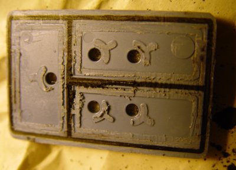
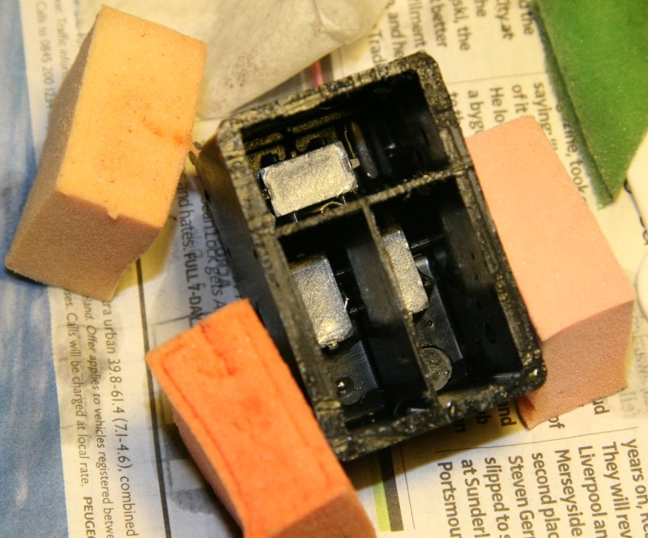
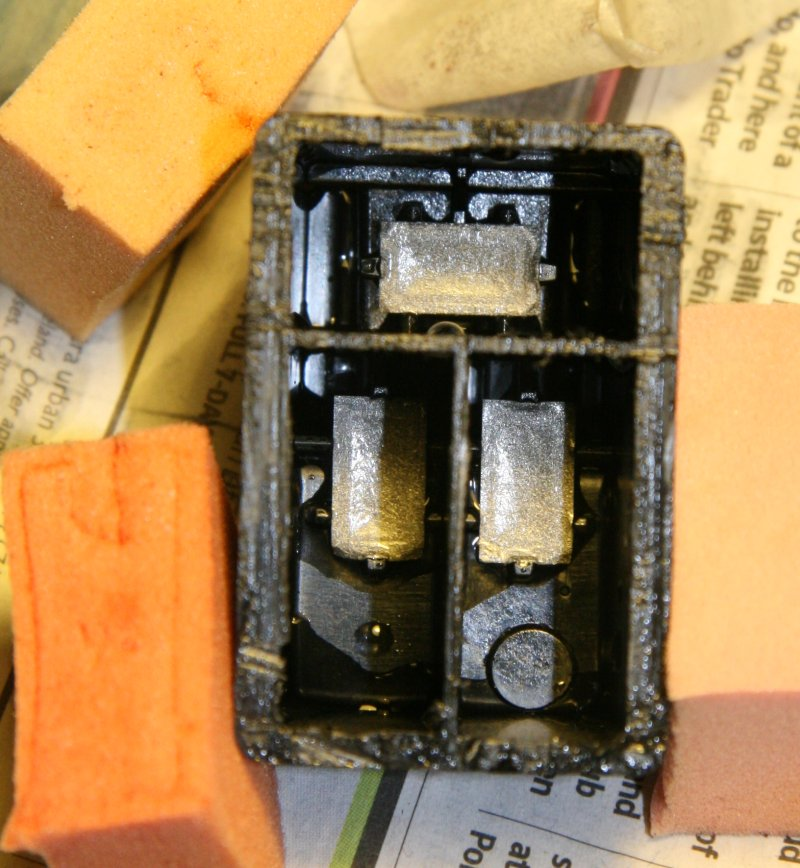
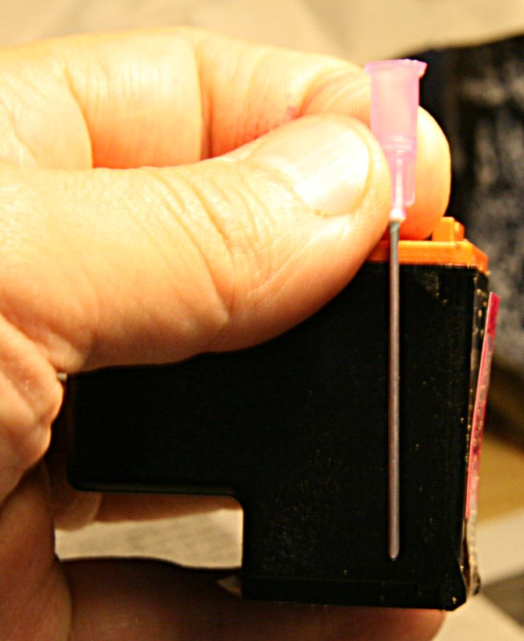
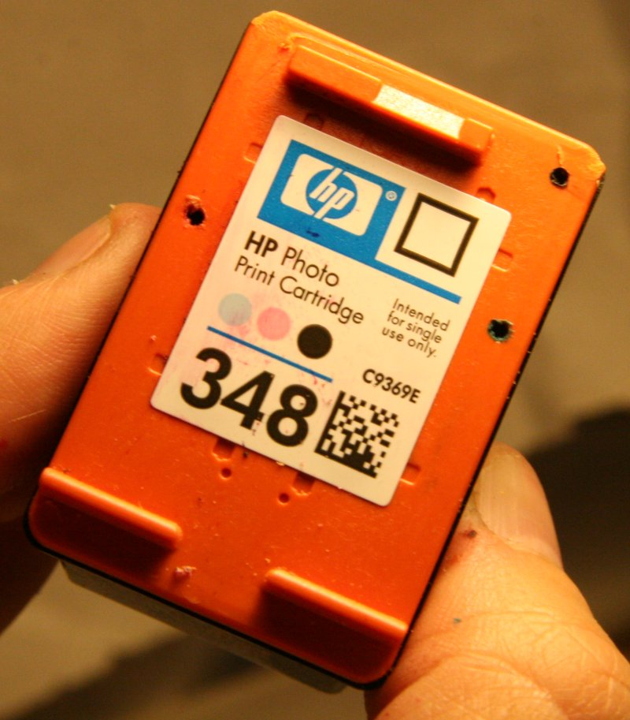
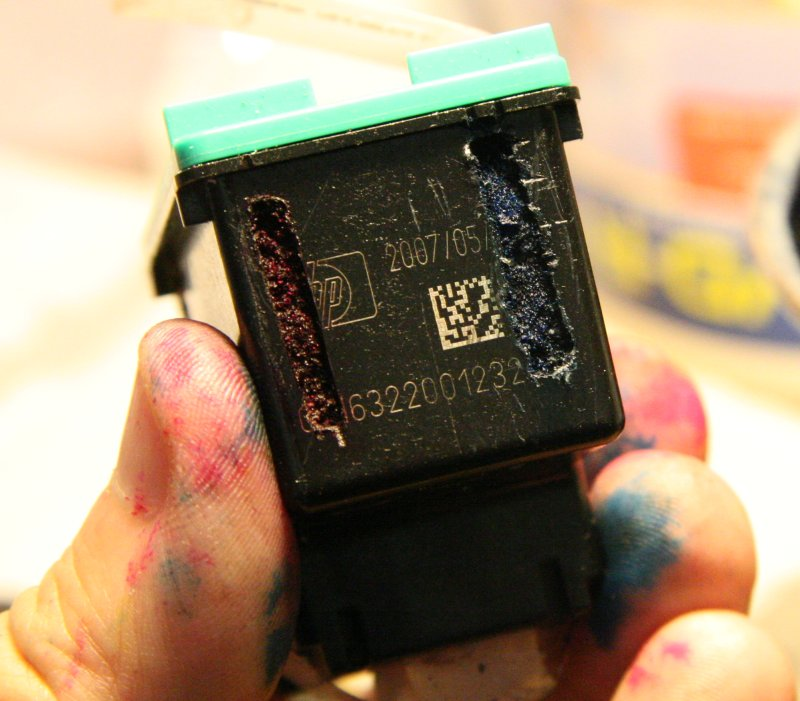
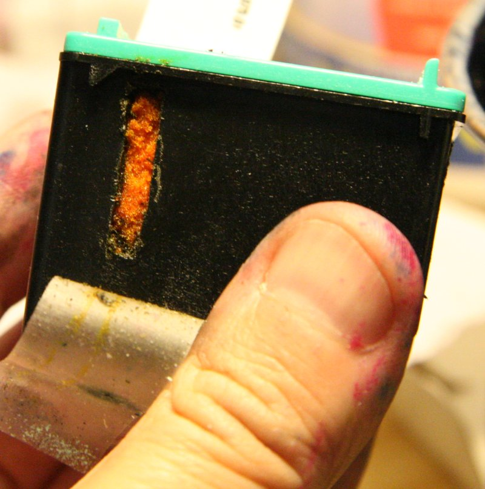
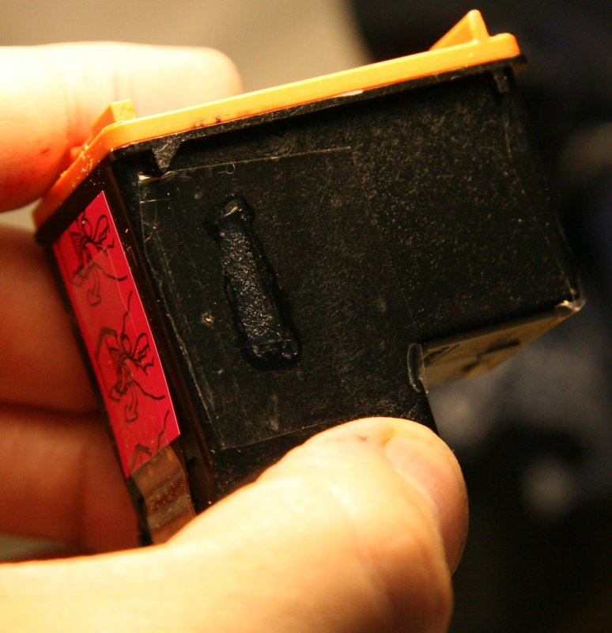
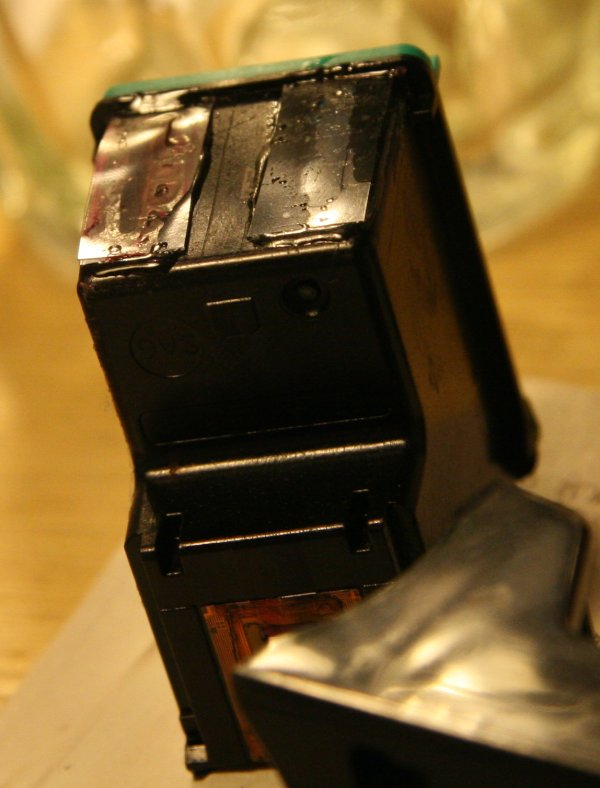
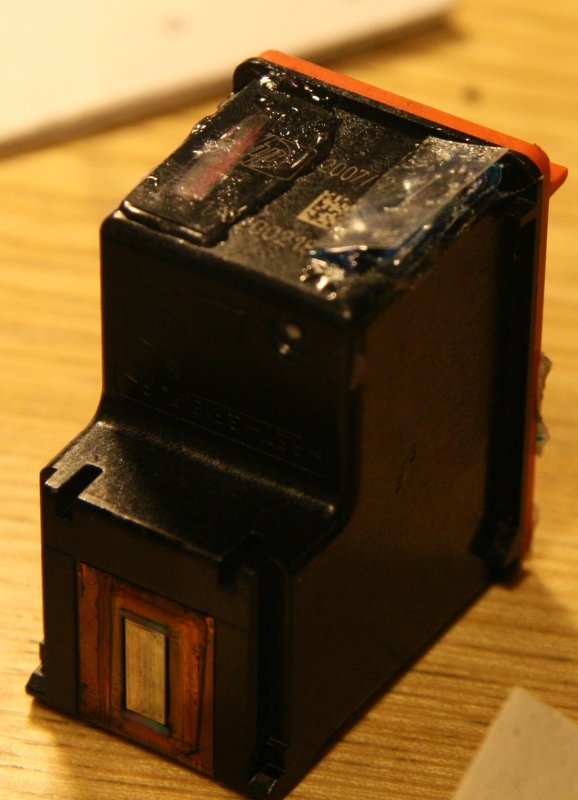

this page documents some work I've done on modifying hp ink cartridges to improve their 'refillability'. I have a photosmart 8450 and a deskjet 1220C, but this work is focused on the newer style cartridges for the 8450 (specifically the 100, 344, and 348 but probably relevant to most of this style). this work is probably only for the hardcore home-refilling geek, but certainly it would be interesting to hear from anyone selling specially modified hp ink carts!
I have a love-hate relationship with the hp printers. I really like their support of open-source drivers for linux, and this was probably the deciding factor in buying another (third) hp printer instead of a canon - even though my 960 died for no apparent reason. presumably hp wouldn't be too enamoured of me publishing this page (if they notice) and would just as soon I be taking away canon's ink revenue instead, but I'm just completely fed up with the cost of the cartridges and how quickly they run out when making full size (a4 / 8x10 ) prints.
in fact, in my opinion the 8450 has been relatively well set up for (home) refillers; the alignment and cartridge cleaning entries on the menu are really helpful, and you can always buy new carts with their integrated print heads and start over again.
naturally, the inability to somehow tell the printer that the cartridge really is full again is not helpful, and no I have not found a solution. I expect that these newer printers (compared to e.g. the 1220 or 960) keep track of the used cartridge serial numbers in non-volatile memory with enough space for thousands of entries instead of the three-deep queue the older models apparently have. although there's no block to printing, this is more than the minor annoyance of the various warnings about carts being low on ink, as it would be nice to have a reliable system for knowing when to refill before the print head runs dry.
I'm very interested in the new Kodak printers recently announced, and I hope they live up to the claims of reduced ink (and matching paper) prices. will just have to see how they come through on the linux side. although I've enjoyed the challenge of figuring out ways to make the hp systems work better for me, I've really put a lot more time into it than I intended to and would really prefer to have been just putting out nice photos. the fact of the matter is that I care about the quality of my final product, and getting the best can easily take more than one try. in order to make it an enjoyable and stress-free experience - I am the paying consumer after all - this means I need to be working with something along the cost lines of water (or maybe milk) instead of liquid platinum.
I would pay extra for access to bulk genuine hp ink (perhaps even avoiding the long detour into color management and icc profiles). I've avoided modifying hplip or developing something standalone to try and track ink usage because I don't want to be the source of any anti-open-source ammunition. I am just not happy with my ability to produce my own prints, so much so that I paid $2 a page recently for someone else to deal with the failures when I needed it done right.
well, enough diatribe; on to the content.
principles:
the basic principles behind these modifications are:
approach:
I added windows to the cartridges so I can observe the ink levels in the sponges directly. this didn't really work, as I've not been able to adequately seal the windows over the long term. I also drilled separate holes for refilling, allowing access to reservoirs inside the cartridge that aren't accessed by the normal 'needle in the sponge' approach.
disclaimers:
tools:
the main tool used for cutting and drilling on the cartridges was the rotary tool shown in the eye protection photos. known widely as a 'dremel tool', mine is actually from sears. getting the top off the cartridges for initial investigations required a saw blade from x-acto.
background:
did I mention use eye protection? here it is again: use eye protection. I value my eyes very highly; I always use eye protection.

as you can see, the top cover has grooves that the main cartridge body slides into, and there's probably some heavy-duty glue added as well. I don't think there's any way you would get the cover off without cutting, as I did here. it is unlikely the cover can be sealed back on at this stage...

inside a an opened and cleaned up cartridge, view number one. not the only photo on the web of this subject. what a nice color the sponges are without any ink.

inside an opened and cleaned cartridge, view number two; a few water drops remain. the silver things are the mesh forming the beginning of the print head. ideally from there through to the printhead will remain full of ink, never drying out or getting any air bubbles. note in particular the reservoirs on each side of the top mesh, and in 'front' of the two other meshes. observe that the sponge compresses against the silver mesh, leaving the indentations, but probably doesn't extend all the way down into these reservoirs.
first modification:

instead of going through the ventilation holes on top of the cartridge (under the sticker), create an access to use longer needles to reach all the way to these reservoirs. if long needles are used through the exiting ventilation ports, they will puncture the mesh and probably the cartridge will not work as intended any more.

"Intended for single use only." there doesn't seem to be a good way to template or otherwise plan these holes; just 'eyeball' it. these positions are well away from the mesh and lead directly into the reservoirs at the bottom of the cartridge. the pair of reservoirs on either side of the top mesh are connected by channels, so only one side needs to be filled.
second modification:
so the extra holes improve the ability to fill easily and completely but a problem remains in determining what the ink level inside is between refills. to solve this, holes were cut in the sides of the cartridge and covered with clear plastic (from cd envelopes). the plastic was glued down with epoxy.



that's just a bit of clear sticky tape covering the hole in the last photo; it didn't seal very well. if doing this again, the holes don't need to go nearly as close to the top as shown in the first images, and leaving extra surface intact as in the third image makes sealing easier.
results:
over time, the epoxy could not withstand exposure to the (liquid?) ink. other adhesives are under investigation. the photos below are after approximately eight months.

in this photo the epoxy is failing in both windows, although one has only a relatively small leak

in this photo one window has remained sealed, whilst the other has experienced catastrophic failure. although not shown, the side windows remained sealed on all three cartridges.
conclusions:
I hope you have found this useful or perhaps just interesting. please drop me a line if you have some information or ideas to contribute.
24 february 2007.